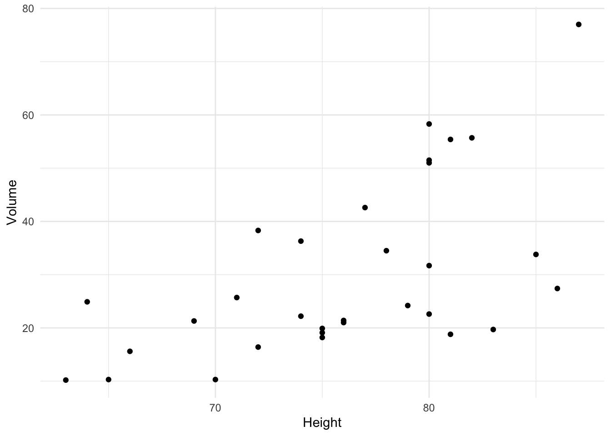
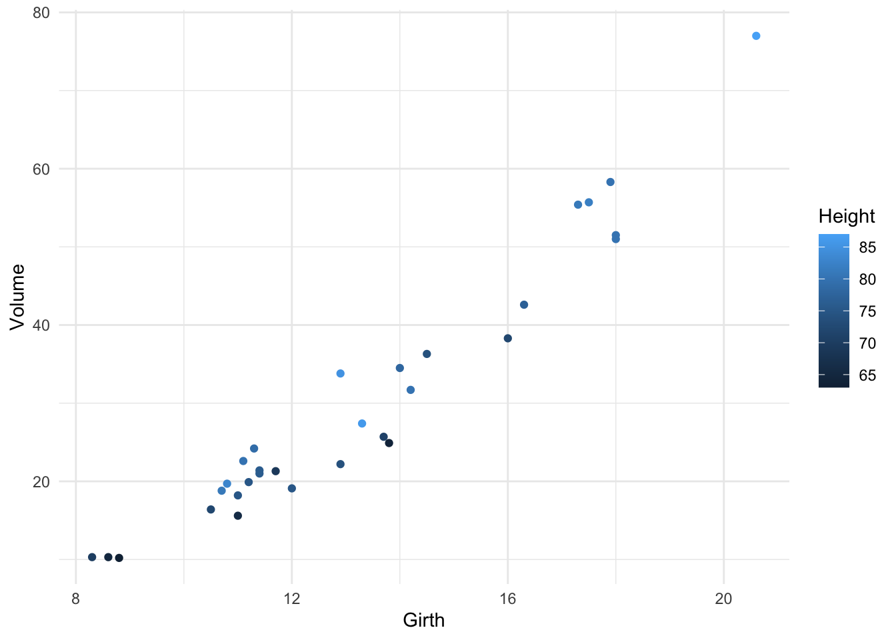
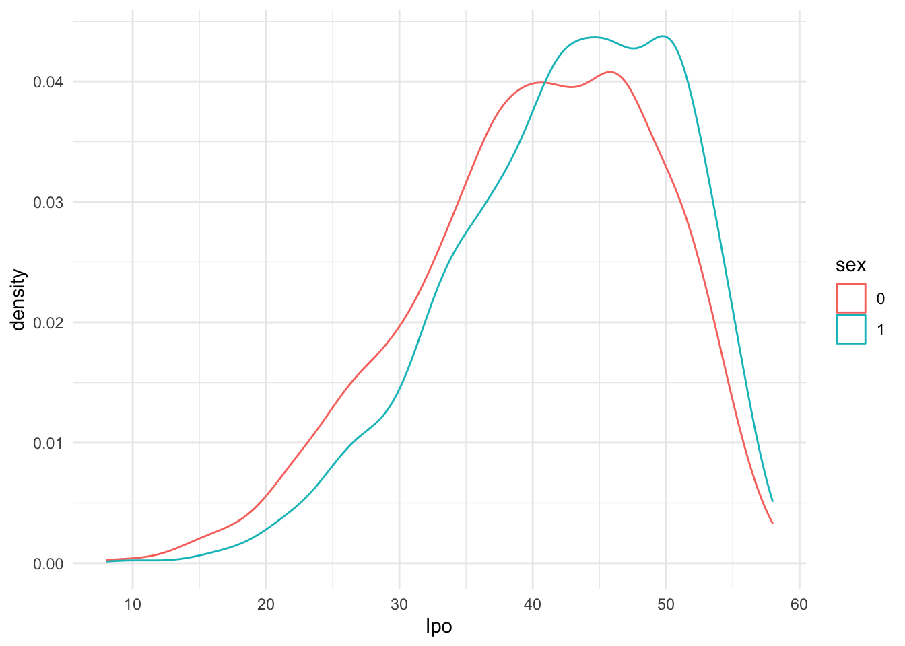
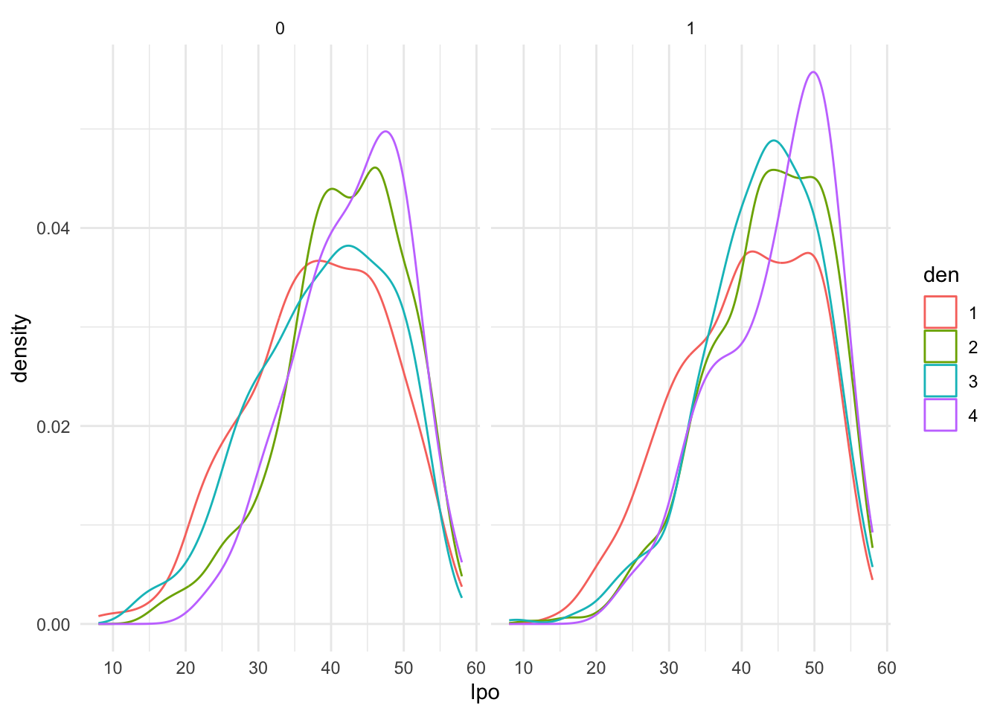

m1 <- lm(Volume ~ Height + Girth, data = trees)
m1
Call:
lm(formula = Volume ~ Height + Girth, data = trees)
Coefficients:
(Intercept) Height Girth
-57.9877 0.3393 4.7082 Sheng Long
November 28, 2025
A deep dive into the various mathematical notation systems and R packages for fitting multilevel hierarchical models
TLDRThis is a blog post that summarizes the things I found helpful while going through the various mathematical notation systems and R syntax for multilevel models1
1 otherwise known as hierarchical models, mixed models, panel data models, etc.
lmWe will first start with the linear models, where we don’t consider the effects of any grouping variable. We will first use the trees data set:


In general, we can specify linear models via the matrix notation as follows:
\[\mathbf{y} = \mathbf{X}\mathbf{\beta} + \mathbf{e}\] where \(\mathbf{y}\) is the response vector of length \(n\), \(\mathbf{X}\) is the design matrix of size \(n \times p\), \(\mathbf{\beta}\) is the \(p\)-vector and \(\mathbf{e}\) is the error variable. More on the different notation systems later.
From the above plot, there seems to be a linear relationship between Volumne and Girth. We can try to fit a linear model using the lm function:
Call:
lm(formula = Volume ~ Height + Girth, data = trees)
Coefficients:
(Intercept) Height Girth
-57.9877 0.3393 4.7082 Tanaka and Hui (2019) provides a nice graph that connects the dots between the symbolic formulae used in lm and its connection to the mathematical equation.
lmerOften times we encounter data with some “grouping” factors, e.g., students’ scores from schools from different districts, etc. Here we will use the data set used by this chapter by Stef van Buuren in Flexible Imputation of Missing Data. This is data on school performance of grade 8 pupils in Dutch schools. There data were collected by Brandsma and Knuver (1989) and were used as the primary examples in Chapters 4 and 5 of Snijders and Bosker (2012). The data contains a mix of both pupil-level measuremetns and school-level measurements.
Rows: 4,106
Columns: 4
$ sch <int> 1, 1, 1, 1, 1, 1, 1, 1, 1, 1, 1, 1, 1, 1, 1, 1, 1, 1, 1, 1, 1, 1, …
$ lpo <dbl> NA, 50, 46, 45, 33, 46, 20, 30, 30, 57, 36, 36, 29, 40, 41, 47, 33…
$ sex <int> 1, 1, 0, 0, 0, 0, 0, 0, 0, 0, 0, 0, 1, 0, 0, 0, 0, 0, 1, 1, 1, 1, …
$ den <int> 1, 1, 1, 1, 1, 1, 1, 1, 1, 1, 1, 1, 1, 1, 1, 1, 1, 1, 1, 1, 1, 1, … sch lpo sex den
Min. : 1.0 Min. : 8.00 Min. :0.0000 Min. :1.00
1st Qu.: 66.0 1st Qu.:36.00 1st Qu.:0.0000 1st Qu.:1.00
Median :132.0 Median :42.00 Median :0.0000 Median :2.00
Mean :129.2 Mean :41.33 Mean :0.4883 Mean :2.04
3rd Qu.:187.0 3rd Qu.:48.00 3rd Qu.:1.0000 3rd Qu.:3.00
Max. :259.0 Max. :58.00 Max. :1.0000 Max. :4.00
NA's :204 NA's :10 NA's :249 Rows: 3,648
Columns: 4
$ sch <int> 1, 1, 1, 1, 1, 1, 1, 1, 1, 1, 1, 1, 1, 1, 1, 1, 1, 1, 1, 1, 1, 1, …
$ lpo <dbl> 50, 46, 45, 33, 46, 20, 30, 30, 57, 36, 36, 29, 40, 41, 47, 33, 37…
$ sex <int> 1, 0, 0, 0, 0, 0, 0, 0, 0, 0, 0, 1, 0, 0, 0, 0, 0, 1, 1, 1, 1, 1, …
$ den <int> 1, 1, 1, 1, 1, 1, 1, 1, 1, 1, 1, 1, 1, 1, 1, 1, 1, 1, 1, 1, 1, 1, … sch lpo sex den
Min. : 1.0 Min. : 8.00 Min. :0.0000 Min. :1.00
1st Qu.: 67.0 1st Qu.:36.00 1st Qu.:0.0000 1st Qu.:1.00
Median :136.0 Median :42.00 Median :0.0000 Median :2.00
Mean :131.4 Mean :41.28 Mean :0.4852 Mean :2.06
3rd Qu.:189.0 3rd Qu.:48.00 3rd Qu.:1.0000 3rd Qu.:3.00
Max. :259.0 Max. :58.00 Max. :1.0000 Max. :4.00 sch lpo sex den pid
120 : 35 Min. : 8.00 0:1878 1:1094 Min. : 1.0
134 : 34 1st Qu.:36.00 1:1770 2:1422 1st Qu.: 912.8
19 : 33 Median :42.00 3: 951 Median :1824.5
125 : 33 Mean :41.28 4: 181 Mean :1824.5
155 : 33 3rd Qu.:48.00 3rd Qu.:2736.2
161 : 33 Max. :58.00 Max. :3648.0
(Other):3447 So according to this source2 there are three notational systems: 1. level notation 2. composite notation 3. matrix notation
2 https://stefvanbuuren.name/fimd/sec-threeformulations.html
… which is consistent with what I’m seeing in this other paper.
There is also this source which is about turning formula into latex equations.
where \(\texttt{lpo}_{ij}\) is the test score of pupile \(i\) in school \(j\). Note here that the subscripts distinguish the level-1 and level-2 variables.
We can also substitute the level-2 models into level-1 model and result in the following single predictive equation:
\[ \texttt{lpo}_{ij} = \beta_0 + \beta_1 \text{sex}_{ij} + \beta_2 \texttt{den}_j + u_{0j} + \epsilon_{ij} \]
Linear mixed model fit by REML ['lmerMod']
Formula: lpo ~ 1 + sex + den + (1 | sch)
Data: df
REML criterion at convergence: 25717.17
Random effects:
Groups Name Std.Dev.
sch (Intercept) 3.962
Residual 7.858
Number of obs: 3648, groups: sch, 198
Fixed Effects:
(Intercept) sex1 den2 den3 den4
38.068 2.273 3.276 1.143 4.593 We can also use the equatiomatic package to double check:
\[ \begin{aligned} \operatorname{lpo}_{i} &\sim N \left(\alpha_{j[i]} + \beta_{1}(\operatorname{sex}_{\operatorname{1}}), \sigma^2 \right) \\ \alpha_{j} &\sim N \left(\gamma_{0}^{\alpha} + \gamma_{1}^{\alpha}(\operatorname{den}_{\operatorname{2}}) + \gamma_{2}^{\alpha}(\operatorname{den}_{\operatorname{3}}) + \gamma_{3}^{\alpha}(\operatorname{den}_{\operatorname{4}}), \sigma^2_{\alpha_{j}} \right) \text{, for sch j = 1,} \dots \text{,J} \end{aligned} \]
And the version with the actual coefficient:
\[ \begin{aligned} \operatorname{\widehat{lpo}}_{i} &\sim N \left(38.07_{\alpha_{j[i]}} + 2.27_{\beta_{1}}(\operatorname{sex}_{\operatorname{1}}), \sigma^2 \right) \\ \alpha_{j} &\sim N \left(3.28_{\gamma_{1}^{\alpha}}(\operatorname{den}_{\operatorname{2}}) + 1.14_{\gamma_{2}^{\alpha}}(\operatorname{den}_{\operatorname{3}}) + 4.59_{\gamma_{3}^{\alpha}}(\operatorname{den}_{\operatorname{4}}), 3.96 \right) \text{, for sch j = 1,} \dots \text{,J} \end{aligned} \]
Still the same model can be written in matrix notation as
\[ y_j = X_j \beta + Z_j u_j + \epsilon_j \]
where \(y_j = \texttt{lpo}_j\) is a column vector containing the scores in cluster \(j\), where \(X_j = (1, \texttt{den}_j, \texttt{sec}_j)\) is the design matrix, a
3 for example, this blog posts uses the matrix notation
lme4 and brms syntax?The composite notation maps best to lme4 and brms syntax.
What about the syntax? Xiaoying provides some lead here but it’s like Wilkinson-Rogers -> Wilkinson-Rogers-Pinheiro-Bates (lm(y ~ x + z)) and then Paurl Burkner for the brms syntax (response | aterms ~ pterms + (gterms | group)).
My mental model of how hierarchical models work is heavily influenced by McElreath (2020). In his book, McElreath said:
I adopt the terminology of Gelman (2005), who argues that the common term random effects hardly aids with understanding, for most people. Indeed, it seems to encourage misunderstanding, partly because the terms fixed and random effects mean different things to different statisticians. See pages 20–21 of Gelman’s paper. I fully realize, however, that by trying to spread Gelman’s alternative jargon, I am essentially splitting into a very strong wind.
The TLDR is that there have been a lot of different definitions of fixed and random effects in different contexts, across different disciplines. Gelman chose to sidestep the overloaded terms and define
… effects (or coefficients) in a multilevel model as constant if they are identical for all groups in a population and varying if they are allowed to differ from group to group.
What this implies in terms of how the math notation4 is that
4 Referring to section 12.1 Notation from Gelman and Hill (2007)
nlme, lmer)According to McElreath (2020), it is a compact form of notation, that are intimately related to a “common matrix algebra description of linear models”. If you’ve run lmer code before you know what something like y ~ 1 + x means.
Xiaoying Pu provided a cheat sheet for reading/writing R formulas used in lmer and brms.
In Barr et al. (2013), the provide a nice table.
In Ga& et al. (2013), they looked at the software for fitting multilevel models, and they had a nice table5 about statistical software packages containing modules/functions designed to fix various classes of mixed-effects models. Below I will reproduce this table, but focusing only on the R side of things:
5 Table 26.1
R package |
Linear Mixed Models LMM |
Generalized Linear Mixed Models GLMM |
Nonlinear Mixed Models NLMM |
|---|---|---|---|
nlme |
12 | 12 | 12 |
lme4 |
123 | 123 | 123 |
brms |
1 | 1 | 1 |
We will leverage this paper6 but use the dataset (brandsma object in the mice package) mentioned by this source7.
6 Multilevel Model Notation - Establishing the commonalities
7 https://stefvanbuuren.name/fimd/sec-threeformulations.html
We will concentrate on four variables:
sch: school numberlpo: language test post, outcome at pupil level.sex: sex of pupilden: school denomination, predictor at school level.

\[y_{ij} = \beta_0 + u_{0j} + \epsilon_{ij}\]
The model posits that the score of a randomly selected student \(i\) in a randomly selected school \(j\) can be represented as a sum of:
TODO: I don’t think the following is correct …
The same model can be rewritten as \[\texttt{lpo}_{ic}=\beta_0 + \beta_1 \texttt{sex}_{ic} + \beta_2 \texttt{den}_c + u_{0c} + \epsilon_{ic}\] Which in Gelman notation, is something like (TODO this is not right …) \[\texttt{lpo}_{i} = \beta_0 + \beta_1 \texttt{sex}_{\texttt{class}[i]} + \beta_2 \texttt{den}_{j[i]} + u_{0c} + \epsilon_{ic} \]
Multilevel models contain two forms of stochastic variation, usually called variance components, captured in random effects \(u_{0j}\) and error \(\epsilon_{ij}\) terms,